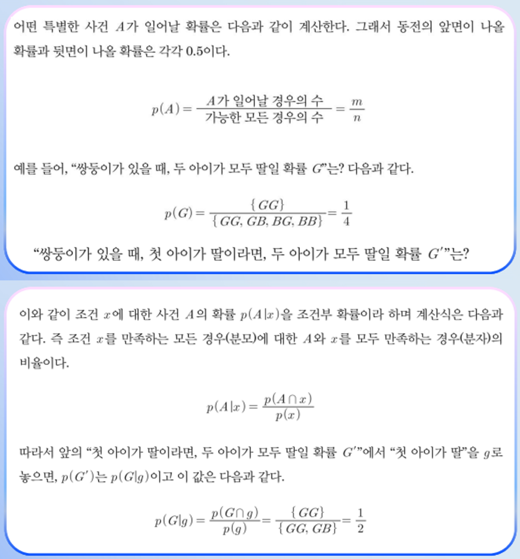

★ 빈출 ★
위 계산 결과 — 엄마가 자주 가는 마트는 M4(40%)지만, 고등어를 사왔다는 사실로부터 가장 가능성 높은 곳은 M3(32%). 사후확률이 사전확률을 뒤집을 수 있다.
암 진단 사례 — 정확성의 함정
"검사 정확성 99%"의 의미: P(양성 | 암) = 0.99. 암 환자 100명 중 99명을 정확히 진단.
그러나 환자가 정말 알고 싶은 것은: P(암 | 양성) — 양성 판정이 나왔을 때 실제로 암일 확률.
이 둘은 매우 다르다. 암 발병률이 1%라고 가정하고 베이즈 정리로 계산하면:
P(암 | 양성) = P(양성|암) · P(암) / P(양성) ≈ 1%
거짓 양성(False Positive) 때문에 실제 암일 확률은 의외로 낮다.
"검사 정확성 99%라고 해도 양성 판정 후 실제 암일 확률은 1%일 수 있다. 모든 답은 문제에 있다."
— 강태원 교수
베이즈 정리의 현대적 응용
스팸 필터(Spam Filter): 스팸 메일에서 자주 나오는 단어 학습 → 새 메일이 스팸일 확률 계산
의료 진단: 증상으로 질병 추정
음성 인식: 발음에서 단어 추정
나이브 베이즈 분류기(Naive Bayes Classifier): 머신러닝의 기본 알고리즘
2주차 중국어 방과의 연결
"프로그램이 진짜로 이해하는가"에 대해 베이즈 추론은 또 다른 답을 준다 — 패턴 누적으로 미래를 예측하는 능력이 곧 학습이며 추론의 본질일 수 있다.
3차시퍼지 이론 (Fuzzy Theory) — 애매모호함의 수학화
"가깝다", "높다", "많다" 같은 언어적 모호함을 컴퓨터가 직접 처리하게 만드는 이론.
퍼지(Fuzzy)의 의미
"Fuzzy" = 영어로 흐릿한, 경계가 모호한. 1965년 Lotfi Zadeh(자데)가 제안한 이론. 인간 언어의 자연스러운 모호함을 수학적으로 표현.

확률과 조건부 확률 — 가능성의 차이를 재는 저울
🎯 강의 끝 퀴즈 (시험 1순위)
강의 영상 마지막에 등장하는 빈칸 채우기 — 핑크 단어가 정답입니다.
1차시
비는 올 수도 있고 아닐 수도 있다. 확실하지 않다. 하지만 확실하지 않은 정도가 다르다. 하늘이 푸를 때와 먹구름이 끼었을 때가 다르고 인근에 비가 오는 경우와 그렇지 않은 경우가 다르다. 이럴 때 사람은 가능성의 차이 즉, 확률을 생각한다. 확률이란 이렇듯 가능성의 차이를 측정하는 척도 즉, 일종의 저울 혹은 ( 자 )다.
2차시
특정 사건이 발생하고 해당 사건의 원인이 여러 개인 상황에서, 그 사건의 원인을 찾을 때 ( 베이즈 ) 추론을 사용한다.
3차시
퍼지 집합을 이용해서 퍼지 규칙을 정의할 수 있고, 이 규칙을 이용해서 추론할 수 있다. 퍼지 추론은 특히 ( 제어 ) 분야에서 아주 많이 응용된다.